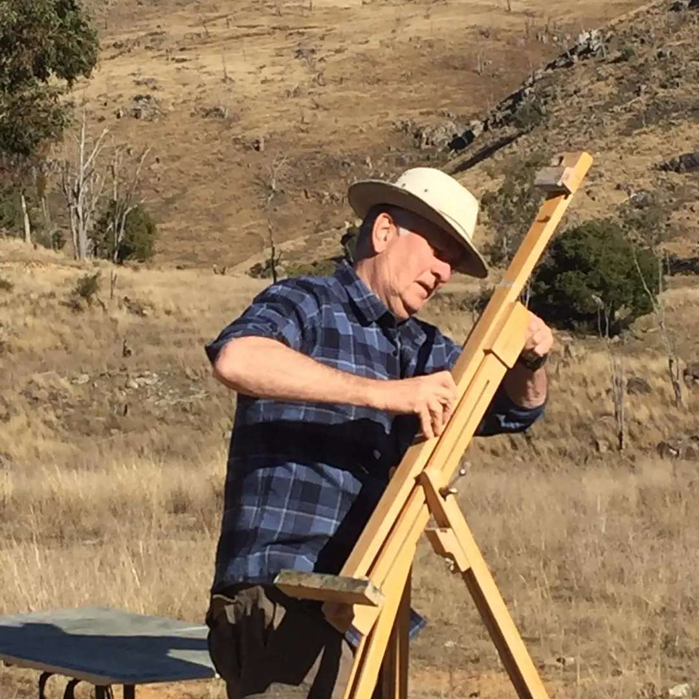

Painter of the Australian landscape. Studio in Lismore, in the Northern Rivers of New South Wales — lately of Cottles Bridge, Victoria.
Paintings
About
Mark Wotherspoon was born in Melbourne. He studied Fine Art at the Instituto de Allende in Mexico, and bronze casting with Ricardo Bannister in the state of Guanajuato. On returning to Australia he completed his studies at the Phillips Institute and Melbourne State College.
He was awarded a grant from the Community Arts Board of the Australia Arts Council to work on large urban street murals with the muralist Geoff Hogg.
He paints outdoors, mostly. The landscapes here were made on location around the Northern Rivers, at Dunmoochin and Cottles Bridge in Victoria, and around Tenterfield. The portraits are largely of family and of himself.
Enquiries — mwothe011@gmail.com
@mark_wotherspoon_art
